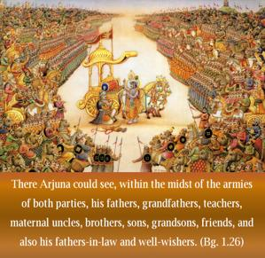
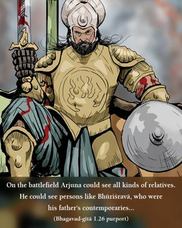
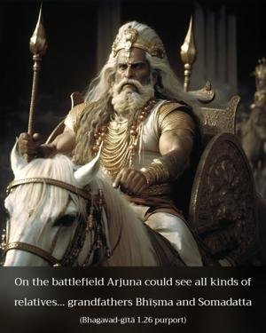
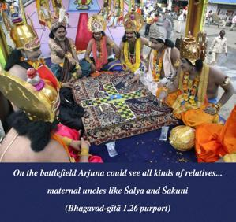

There Arjuna could see, within the midst of the armies of both parties, his fathers, grandfathers, teachers, maternal uncles, brothers, sons, grandsons, friends, and also his fathers-in-law and well-wishers.




On the battlefield Arjuna could see all kinds of relatives. He could see persons like Bhūriśravā, who were his father’s contemporaries, grandfathers Bhīṣma and Somadatta, teachers like Droṇācārya and Kṛpācārya, maternal uncles like Śalya and Śakuni, brothers like Duryodhana, sons like Lakṣmaṇa, friends like Aśvatthāmā, well-wishers like Kṛtavarmā, etc. He could see also the armies which contained many of his friends.